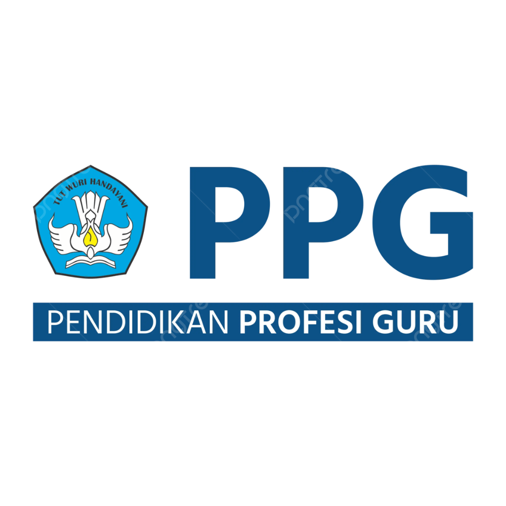

Silakan pilih e-portfolio yang ingin Anda lihat
Dokumentasi perjalanan profesional, karya, dan refleksi pembelajaran selama PPG Prajabatan 2026
Refleksi akhir Praktik Pengalaman Lapangan Terbimbing dan Filosofi Mengajar